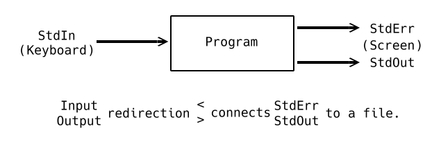

CS 246 - Object-Oriented Development |
|
| Instructor: | Brad Lushman |
|---|---|
| Office: | DC3110 |
| Email: | brad.lushman@uwaterloo.ca |
| Website: | https://www.student.cs.uwaterloo.ca/~cs246/ |
| Note: | All program codes below are provided by Prof. Lushman in class. |
Lecture 1 - 07/09/2017
Module 1 - The Shell
What is Shell?
It is the interface to the OS (Operating System).
It gets the OS to do things. For example, run program, manage files, etc.
The two main categories are graphical and command-line.
- Graphical interface is easy to use; people only need to click with mouse or touch the screen to finsih a task. It is available on almost every OS.
- Command-line interface accepts commands that are typed at the prompt. It is more versatile.
In this course, we use Bash.
To make sure you are running Bash, type echo $0.
Then the shell should print out the tyoe of prompt -bash.
Linux Filesystem
The Linux filesystem consists of program, code and data.
The first command we are going to talke is cat, which is diplayed the contents of a file.
- Example:
cat /usr/share/dict/words/is always the root directory.usr,share,dictare the directories, which are contained file.wordsis the file.
In Linux, a directory is a special kind of file.
When you want to kill the program, press ^c (ctrl+c).
The second command is ls; it will list files (which are non-hidden) in current directory.
- Type
ls -awill show all files, include hidden files. - By the way, if you want to hide a file, just name it starting with
.
The third command is pwd; it will print out the current directory.
Sometime, you will see 1%.
- The
%in here is same as$, so you are good to go!
What if you just type cat?
Nothing happen? Not really. It will print everything you type later.
- Example:
cat
< Hello.
> Hello.
Is it useful? Maybe.
Example: to check if we can capture the output in a file.
What if we type cat > output.txt?
Okay... This is just the stupid way to create a file.
If we want tot stop the program (not killing it), we use ^d (ctrl+d) at the beginning of a line.
- It sends an end-of-file (EOF) signal to
cat.
In general, command-agrs > file excutes command-args and captures output in file instead of screen.
It called output redirection.
The input redirection looks like this: cat < inputfile.txt.
It takes input from inputfile.txt instead of keyboard.
It displays the file's contents.
It looks like cat inputfile.txt.
What is the difference?
cat inputfile.txt passes the name inputfile.txt as an argument to cat.
catopens the file and displays it.
cat < inputfile.txt
The shell opens the file and passes the contents to cat instead of keyboard.
The next command is wc; it will count the number of lines, words and characters (in order) in file.
- Example 1:
< wc output.txt
> 40 149 947 output.txt - Example 2:
< wc < output.txt
> 40 149 947 - Example 3:
< wc *.txt>40149947text1.txt1050700text2.txt............30010016479total
*.txt is the globbing pattern; it matches any sequence of characters.
Shell finds all matching files in current directory and substitutes on command-line.
Basically, cat *.txt is same as wc text1.txt text2.txt text3.txt ... text9.txt.
If we do cat *.txt, it will print all contents, line by line.
Note that we CANNOT do wc < *.txt.
We can only redirect to/from one file.
Look at the Linux Command Summary sheet tot see what tot do with more pattern.
By the way, we can do wc < a.txt > b.txt.
Streams
Every process attached to 3 streams.

StdErr
It separates output stream for error messages.
So that output and errors can go to separate places.
So you don't miss the error messages, and error messages don't corrupt output formatting.
Buffered
StdOut may be buffered.
System may wait to accumulate output before actually displaying (flushing) it.
StdErr is nver buffered, so we can get the error message immediately.
Pipes
It uses output (StdOut) of one program as input (StdIn) of another.
-
Example 1: How many words occur in the first 5 lines of
sample.txt?
-
head -n fileprints the first n lines offile.
-
wc -w fileshows just the number of words infile.
head -5 sample.txt | wc -worcat sample.txt | head -5 | wc -w.
Note that|is the "pipe". -
-
Example 2: Suppose
word1.txt,word2.txt, etc. contain lists of words, one per line.
Print a duplicate-free (no repeated) list of all words that occur in any of these files.uniq fileremoves consecutive duplicate lines fromfile.sort filesorts the lines offile.
cat word*.txt | sort | uniq
Lecture 2 - 12/09/2017
This lecture will be updated someday in the future...
Lecture 3 - 14/09/2017
This lecture will be updated someday in the future...
Module 1 - Shell
The End
Software Engineering Topic: Testing
Testing is the essential, ongoing part of program development.
It begins before you start coding.
You need to design test suites (expected behaviour) for testing.
Testing is not debugging; you cannot debug without first testing.
Testing cannot guarantee correctness; it can only prove wrongness.
In general, ideally developer and tester should be different people.
(But not in this course!)
We have different types of testing:
-
Human Testing
- Humans look over code, find flaws
- Code inspections, walkthroughs
-
Machine Testing
- Run the program on selected input, check output against specification
- Cannot check everything, we need to choose test cases carefully
-
Black/White/Grey Box Testing
- no/full/some knowledge of program implement
-
start with black box, supplement with white box
-
Various classes of inputs
- Example: numeric ranges (positive v.s. negative)
- Boundaries of valid data ranges (edge cases)
- Multuple simltaneous boundaries
-
Intuition/Experince
- Guess at likely errors
- Extreme cases
-
Various classes of inputs
-
White Box
- execute all logical paths through the program
- make sure every function runs
- Performance Testing
- Is the program fast enough?
- Regression Testing
- make sure new changes to the program do not break old test cases
-
test suites, testing scripts
- always add cases; never subrtact
-
test suites, testing scripts
- make sure new changes to the program do not break old test cases
| ↑ Go to Index | → Go to Module 2 - C++ (Part 1) |
Find a typo or mistake? Feel free to contact me and I will correct it as soon as possible.
Thanks For Coming Here. - Calvin Li
 This work by Chun Kit (Calvin) Li is licensed under a Creative Commons Attribution-NonCommercial 4.0 International License. Chun Kit (Calvin) Li © 2017 - 2018
This work by Chun Kit (Calvin) Li is licensed under a Creative Commons Attribution-NonCommercial 4.0 International License. Chun Kit (Calvin) Li © 2017 - 2018